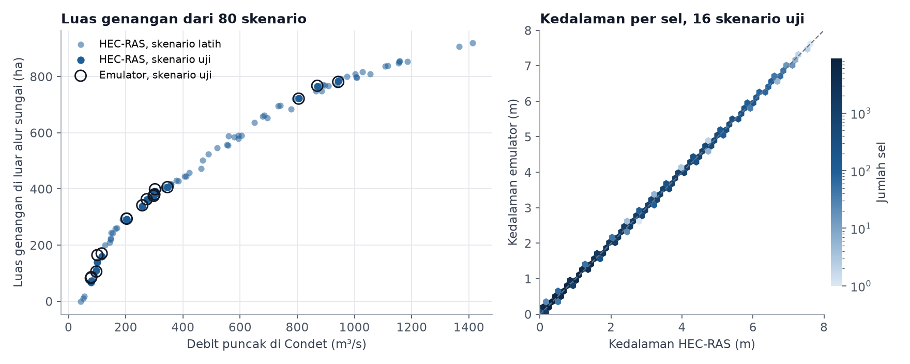
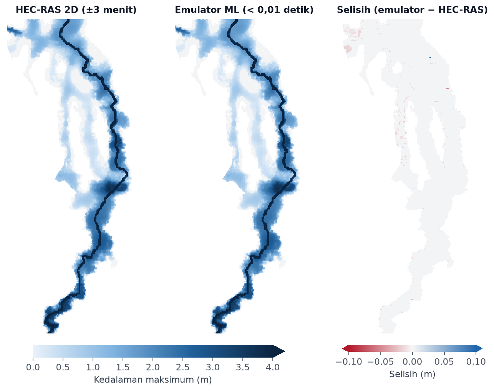

Pemodelan Banjir Ciliwung Condet–Manggarai dengan HEC-RAS 2D dan Emulator Machine Learning
Latar belakang
Hampir setiap musim hujan, permukiman di sepanjang Ciliwung antara Condet dan Manggarai kembali tergenang. Air yang menggenangi Kampung Melayu, Bidara Cina, atau Rawajati sering kali tidak berasal dari hujan di Jakarta, melainkan dari hujan deras di Bogor dan Depok beberapa jam sebelumnya. Karena itu, saat hujan deras turun di hulu, warga di hilir biasanya ingin tahu seberapa luas dan seberapa dalam banjir yang akan datang.
Model hidraulik dua dimensi seperti HEC-RAS 2D bisa menjawab hal itu dengan cukup rinci. Namun setiap simulasi harus disiapkan secara manual dan butuh waktu beberapa menit sampai beberapa jam untuk dijalankan. Di project ini, penyiapan dan pengolahan hasil HEC-RAS dijalankan otomatis dengan Python untuk 80 skenario hujan. Hasilnya lalu dipakai untuk melatih emulator machine learning, yaitu model yang meniru hasil HEC-RAS tetapi bisa dihitung jauh lebih cepat.
Data yang digunakan
| Data | Format Data | Jenis Data | Sumber |
|---|---|---|---|
| Model elevasi digital FABDEM (30 m, tanpa bangunan dan pohon) | Raster | Sekunder | University of Bristol, melalui Google Earth Engine |
| Tutupan lahan ESA WorldCover 2021 (10 m) | Raster | Sekunder | European Space Agency |
| Kelompok hidrologi tanah HiHydroSoil v2.0 (250 m) | Raster | Sekunder | FutureWater |
| Citra Sentinel-2 Level-2A, Juni 2024–Oktober 2025 | Raster | Sekunder | ESA Copernicus, melalui Google Earth Engine |
| Hasil 80 simulasi HEC-RAS 2D | Tabular dan grid | Primer | Hasil pemodelan |
Metode
Dari hujan menjadi debit
Daerah aliran sungai (DAS) Ciliwung dari hulu sampai Condet memiliki luas sekitar 317 km² dan dibagi menjadi tiga bagian, yaitu hulu sampai Katulampa, Katulampa sampai Depok, serta Depok sampai Condet. Batas DAS dan alur sungai diturunkan dari FABDEM. Di setiap bagian, jumlah air hujan yang menjadi limpasan dihitung dengan metode SCS Curve Number. Nilai Curve Number diturunkan dari tutupan lahan dan jenis tanah, lalu disesuaikan dengan kondisi tanah sebelum hujan, yaitu kering, normal, atau basah.
Limpasan dari setiap bagian diubah menjadi hidrograf, yaitu grafik debit terhadap waktu, dengan metode hidrograf satuan SCS. Hidrograf ini lalu dialirkan ke hilir dengan metode Muskingum, sehingga diperoleh debit Ciliwung di Condet setiap 15 menit. Karena belum ada data muka air yang bisa dipakai untuk kalibrasi, nilai Curve Number diturunkan 10 poin. Penyesuaian ini dibuat agar debit puncak dari hujan besar tidak melampaui kisaran debit banjir Ciliwung yang umum dilaporkan.
| Bagian DAS | Luas (km²) | Curve Number | Waktu jeda |
|---|---|---|---|
| Hulu sampai Katulampa | 151,0 | 79,8 | 1 jam 55 menit |
| Katulampa sampai Depok | 73,9 | 88,9 | 5 jam 3 menit |
| Depok sampai Condet | 91,7 | 90,6 | 5 jam 22 menit |
Curve Number pada tabel adalah nilai dari peta sebelum diturunkan 10 poin. Waktu jeda adalah selang antara pusat hujan dan puncak limpasan di setiap bagian DAS.
Model banjir HEC-RAS 2D
Genangan dimodelkan di dataran banjir Ciliwung dari Condet sampai Manggarai yang memiliki luas sekitar 19 km². Area ini mencakup lahan yang tingginya kurang dari 10 m dari permukaan sungai terdekat dan berjarak paling jauh 1,5 km dari alur utama. Resolusi FABDEM diperhalus menjadi 10 m, lalu alur sungai diperdalam 3 m dengan lebar 30 m, karena DEM 30 m tidak bisa menggambarkan palung sungai yang sempit. Area model kemudian dibagi menjadi sekitar 30 ribu sel berukuran 25 × 25 m.
Debit dari Condet dimasukkan di batas hulu, sedangkan di batas hilir dekat Manggarai air dibiarkan keluar mengikuti kemiringan sungai. Kekasaran permukaan dibuat seragam dengan koefisien Manning 0,06 untuk mewakili permukiman padat. Seluruh file model, mulai dari geometri, kondisi batas, sampai rencana simulasi, ditulis dengan Python dan dijalankan langsung dari baris perintah HEC-RAS 6.5, tanpa membuka antarmukanya sama sekali.
80 skenario hujan
Skenario hujan dibuat dengan Latin Hypercube Sampling, yaitu cara memilih kombinasi yang tersebar merata di seluruh rentang lima variabel berikut.
- Total hujan rata-rata DAS, 40–220 mm
- Lama hujan, 3–24 jam
- Posisi puncak hujan, dari awal sampai akhir kejadian
- Perbandingan hujan di hulu Katulampa terhadap rata-rata DAS, 0,6–1,6 kali
- Kondisi tanah sebelum hujan, dari kering sampai basah
Lama simulasi setiap skenario adalah lama hujan ditambah 18 jam, agar puncak banjir sempat terlewati. Hasil yang diambil dari setiap simulasi adalah kedalaman air maksimum di setiap sel.
Emulator machine learning
Setiap peta kedalaman berisi puluhan ribu sel, sehingga terlalu banyak untuk diprediksi satu per satu. Karena itu, 80 peta kedalaman diringkas lebih dulu dengan Principal Component Analysis (PCA) menjadi 20 pola dasar. Setiap peta banjir bisa disusun kembali dari kombinasi 20 pola ini.
Bobot setiap pola lalu diprediksi dengan Gaussian Process dari tiga ciri hidrograf di Condet, yaitu debit puncak, volume air banjir, dan lamanya debit bertahan di atas separuh puncaknya. Untuk menguji ketepatannya, 16 skenario disisihkan dan tidak ikut dipakai saat pelatihan. Hasil emulator pada 16 skenario itu kemudian dibandingkan dengan hasil HEC-RAS. Setelah pengujian selesai, emulator dilatih ulang dengan seluruh 80 skenario.
Hasil
Ke-80 skenario selesai disimulasikan dalam sekitar 5 jam, atau rata-rata 3 menit per skenario, tanpa ada yang gagal. Galat volume air di semua simulasi kurang dari 0,04%, artinya hampir tidak ada air yang hilang atau bertambah dengan sendirinya selama perhitungan.
Hasil 80 skenario menunjukkan bahwa luas genangan bertambah sangat cepat ketika debit di Condet naik dari 50 sampai sekitar 400 m³/s. Pada debit 100 m³/s, sekitar 140 hektare di luar alur utama sudah tergenang lebih dari 10 cm. Pada 400 m³/s, luasnya sudah mencapai sekitar 445 hektare. Setelah itu pertambahannya melambat, karena dataran rendah di kiri dan kanan sungai sudah terisi, dan air yang datang lebih banyak menambah kedalaman daripada memperluas genangan. Pada debit sekitar 1.000 m³/s, genangan mencapai sekitar 800 hektare.

Luas genangan dihitung dari sel dengan kedalaman lebih dari 10 cm di luar alur sungai yang selalu basah, sehingga bantaran sungai ikut terhitung. Luas genangan pada debit besar juga dibatasi oleh batas area model.
Dua puluh pola dasar dari PCA sudah mewakili 99,99% variasi seluruh peta kedalaman. Karena luas genangan sangat bergantung pada debit puncak, emulator juga bisa meniru hasil HEC-RAS dengan baik. Pada 16 skenario uji, kedalaman hasil emulator rata-rata hanya berbeda 0,7 cm dari HEC-RAS, dan luas genangannya rata-rata berselisih 6 hektare atau sekitar 1,7%. Kesesuaian sebaran genangan yang diukur dengan Critical Success Index (CSI) rata-rata mencapai 0,96, dengan nilai 1 berarti sama persis. Nilai terendah, sekitar 0,82, muncul pada banjir kecil dengan debit di bawah 120 m³/s, karena genangannya sempit sehingga selisih sedikit saja di tepinya sudah berpengaruh besar.
| Model yang dicoba | CSI rata-rata | Galat kedalaman (RMSE) |
|---|---|---|
| Gaussian Process dengan ciri hidrograf | 0,96 | 1,4 cm |
| Gradient Boosting dengan ciri hidrograf | 0,90 | 5,7 cm |
| Peta skenario latih dengan debit puncak terdekat | 0,91 | 7,4 cm |
| Gaussian Process dengan parameter hujan langsung | 0,82 | 8,6 cm |
| Gradient Boosting dengan parameter hujan langsung | 0,66 | 28,1 cm |
Semua model diuji pada 16 skenario yang sama. CSI dihitung dari sel di luar alur sungai dengan ambang kedalaman 10 cm, sedangkan RMSE dihitung pada sel yang basah menurut HEC-RAS atau emulator.
Dari beberapa model yang dicoba, masukan yang dipakai lebih berpengaruh daripada jenis algoritmanya. Emulator yang langsung memakai lima parameter hujan jauh kurang akurat, karena hubungan antara hujan dan banjir di hilir tidak sederhana. Hujan 150 mm yang turun dalam 4 jam, misalnya, menghasilkan debit puncak yang lebih tinggi daripada hujan 200 mm yang tersebar selama sehari. Karena itu, hujan diubah dulu menjadi hidrograf dengan model hujan-debit, sehingga emulator cukup mempelajari hubungan antara hidrograf dan banjir yang jauh lebih teratur.

Skenario ini tidak dipakai saat melatih emulator. Selisih yang lebih kecil dari 1 cm tidak ditampilkan. Luas genangannya 723 hektare menurut HEC-RAS dan 721 hektare menurut emulator.
Pada skenario di atas, sebaran dan kedalaman banjir dari emulator hampir tidak bisa dibedakan dari HEC-RAS. Dari Condet sampai Rawajati, lembah sungainya sempit sehingga genangan tidak melebar jauh, tetapi kedalamannya rata-rata sekitar 2 meter. Dari Cawang, Bidara Cina, sampai Kampung Melayu, dataran di kiri dan kanan sungai lebih landai, sehingga air menyebar lebih luas dengan kedalaman rata-rata sekitar 1 meter. Menjelang Manggarai, genangan bahkan meluas ke dataran rendah di sisi barat sungai.
Coba sendiri
Emulator di bawah ini berjalan langsung di halaman web. Setelah hujan diatur dengan penggeser, model hujan-debit akan menghitung hidrograf di Condet, lalu emulator menyusun peta kedalaman maksimum di sepanjang Ciliwung. Pilih salah satu contoh untuk memulai, atau klik peta untuk melihat kedalaman di titik tertentu.
Peta menampilkan kedalaman air maksimum selama kejadian, bukan kondisi pada satu waktu. Alur sungai ikut berwarna biru tua karena selalu berisi air. Setelah peta diklik, gulir untuk memperbesar atau memperkecil.
Kondisi tanah sebelum hujan sangat menentukan besarnya banjir. Hujan 100 mm selama 12 jam menghasilkan debit puncak sekitar 145 m³/s di Condet jika tanah sedang kering, tetapi hampir empat kali lipatnya, sekitar 560 m³/s, jika turun setelah beberapa hari hujan ketika tanah sudah jenuh air. Hujan yang lebih banyak turun di Bogor tidak selalu membuat puncak banjir lebih tinggi, tetapi membuat puncaknya tiba lebih lambat di Condet, karena air butuh waktu untuk mengalir dari hulu. Selisih waktu ini dipakai sebagai dasar peringatan dini banjir kiriman dari Katulampa.
Kesimpulan
Luas dan kedalaman banjir di sepanjang Ciliwung antara Condet dan Manggarai terutama ditentukan oleh besarnya debit yang datang dari hulu. Genangan meluas dengan cepat selama debit di Condet masih di bawah sekitar 400 m³/s. Setelah itu, luasnya hanya bertambah sedikit, karena dataran rendah di sekitar sungai sudah terisi dan air yang datang lebih banyak menambah kedalaman. Kedalamannya juga berbeda di setiap bagian sungai. Dari Condet sampai Rawajati, genangan lebih sempit tetapi lebih dalam, sedangkan dari Cawang sampai Kampung Melayu, genangan lebih luas tetapi lebih dangkal. Banjir juga akan lebih besar jika hujan turun saat tanah sudah basah karena hujan pada hari-hari sebelumnya.
Emulator yang dilatih dari 80 simulasi HEC-RAS bisa menghasilkan perkiraan luas dan kedalaman banjir untuk berbagai skenario hujan dalam waktu kurang dari satu detik, dengan galat kedalaman sekitar 1 cm. Dengan begitu, gambaran banjir bisa langsung dilihat begitu besar hujan diketahui, tanpa perlu menjalankan HEC-RAS lagi.
Meski begitu, hasil ini masih berupa gambaran dari model, bukan prakiraan banjir yang sebenarnya. Model belum memakai DEM yang rinci, penampang sungai yang sebenarnya, bangunan, tanggul, maupun pintu air Manggarai, dan model hujan-debitnya baru dikalibrasi secara kasar. Emulator juga hanya bisa diandalkan dalam rentang skenario yang dipakai untuk melatihnya. Jika dilengkapi dengan DEM LiDAR, data penampang sungai, dan data muka air di Katulampa, Depok, dan Manggarai, perkiraan luas dan kedalaman banjir dari alur kerja ini bisa lebih mendekati kondisi di lapangan.
← View other projects